TRUE (1) or FALSE (0)R notationTRUE (1) or FALSE (0)==, is an example)!)&)|)xor() function in R)TRUE if either of the partial statements is TRUE or both of them are TRUETRUE if and only if one of the statements is TRUER%in% is a membership operator in R – a %in% A means “element a is in the object A”; Its result is TRUE/FLASE!)TRUE to FALSE and vice versaA == B is FALSE, !(A == B) or A != B will be TRUE&)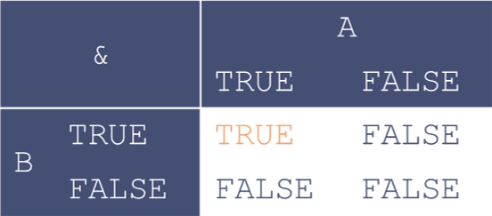
!(A & B) is equivalent to xor(A, B) | (!A & !B)
|)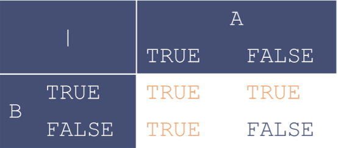
!(A | B) is equivalent to (!A & !B)
xor())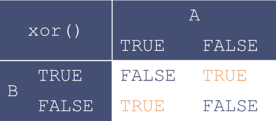
!xor(A, B) is equivalent to (A & B) | (!A & !B)
Suppose you’re on a game show, and you’re given the choice of three doors. Behind one door is a car, behind the others, goats. You pick a door, say #1, and the host, who knows what’s behind the doors, opens another door, say #3, which has a goat. He says to you, “Do you want to pick door #2?” Is it to your advantage to switch your choice of doors?
If there are
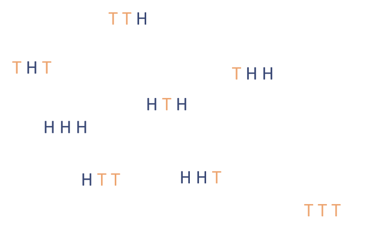
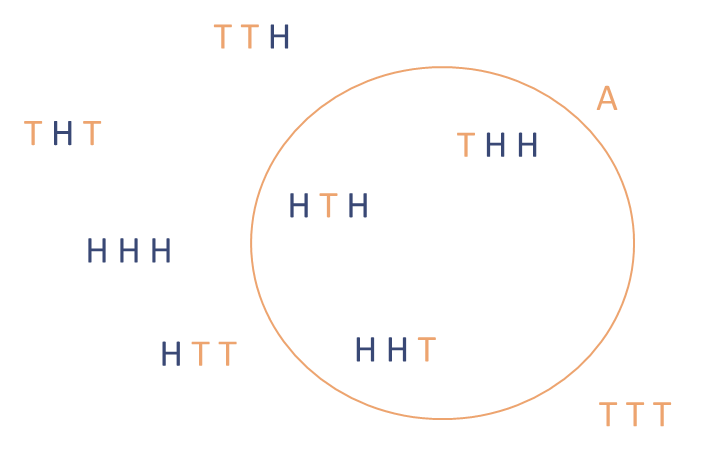
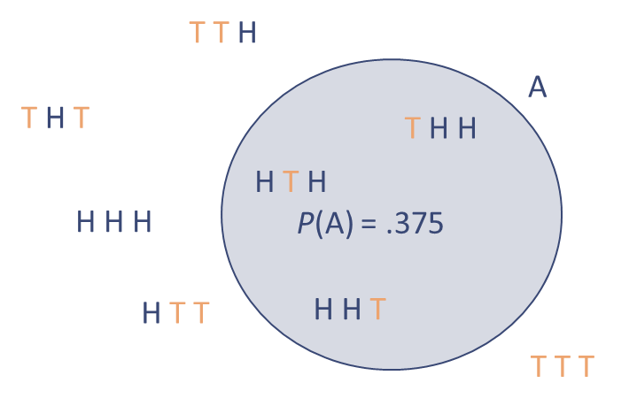
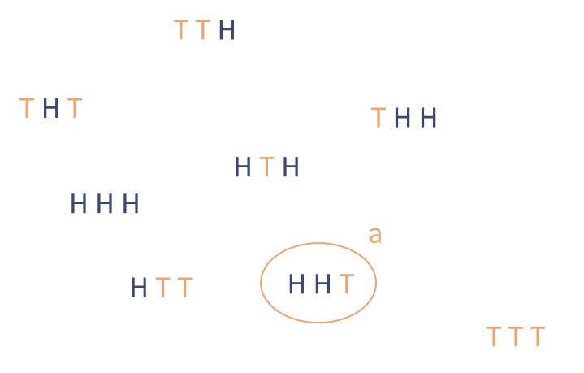
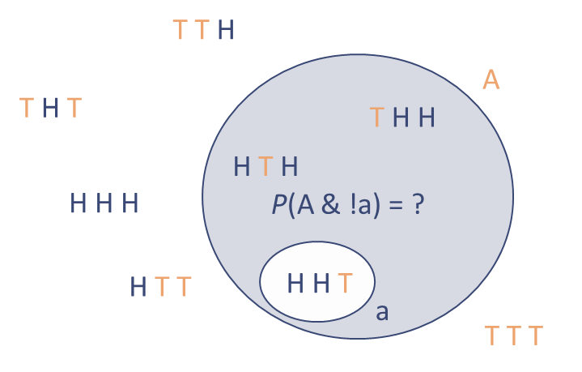
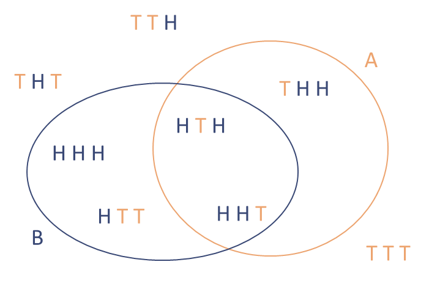
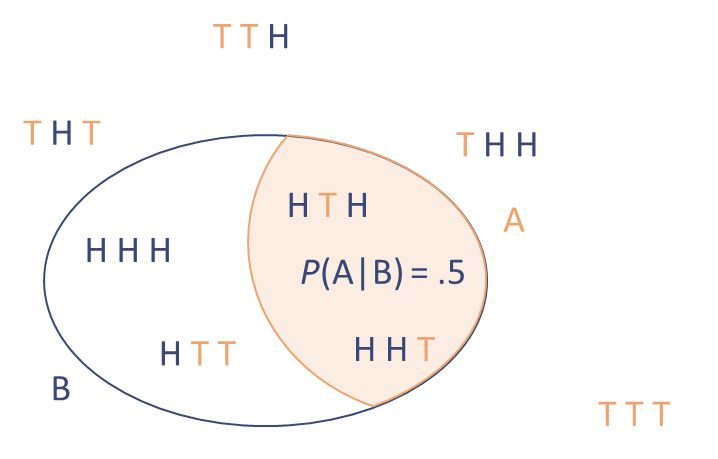
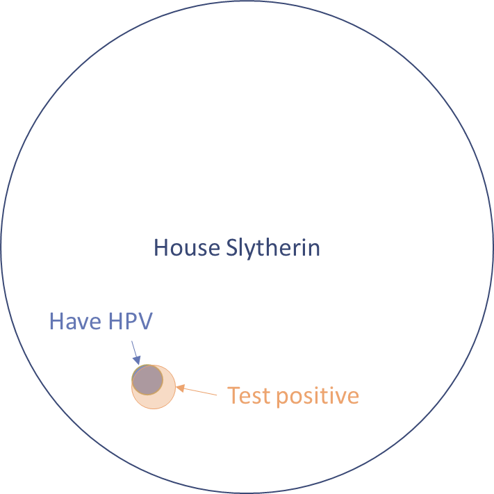
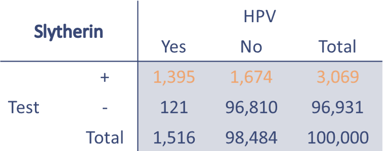
For HPV…
10:00
RR has no way of knowing what level of measurement or type of variable is inside a vectorlogical values (TRUE/FALSE) can only be binomial and nominalcharacter values can only be nominal/ordinal and cannot be continuousnumeric values can represent any level of measurement and any type of variable id age eye_col dpt degree
1 1001 23 blue psy 2:2
2 1002 25 brown cog 1
3 1003 33 brown lel 1
4 1004 26 green psy 1
5 1005 25 blue phi 2:1
6 1006 24 brown lel 2:1id – discrete nominal; unique participant IDage – continuous ratio; age in yearseye_col – discrete nominal; eye colourdpt – discrete nominal; departmentdegree – discrete ordinal; UG degree outcomeR has a handy function so we don’t have to calculate everything “by hand”(median(data$age))
[1] 25
## ordinal data must be converted to numeric for median()
(x <- ordered(sample(1:4, 10, replace = T)))
[1] 4 3 2 3 2 3 1 3 1 4
Levels: 1 < 2 < 3 < 4
(median(as.numeric(x)))
[1] 3
## of limited use with ordered categories
(median(as.numeric(data$degree)))
[1] 1.5
## not meaningful for nominal data but can be done
(median(as.numeric(data$eye_col)))
[1] 2## copy age into new object
age <- data$age
## replace highest value (33) with 83
age[age == max(age)] <- 83
age
[1] 23 25 83 26 25 24
## original age
mean(data$age)
[1] 26
## new age
mean(age) # also, doesn't exist in sample!
[1] 34.33333
median(data$age) # median isn't affected
[1] 25
median(age)
[1] 25## get quartiles (quantiles with n = 4)
## cut data into lower 25%, 50%, 75%, 100%
(quartiles <- quantile(age, c(.25, .5, .75, 1)))
25% 50% 75% 100%
24.25 25.00 25.75 83.00
## IQR = 3rd - 1st quaritle
## don't worry about the "75%", it's just a leftover label
quartiles[3] - quartiles[1]
75%
1.5
## built-in R function
IQR(data$age)
[1] 1.5